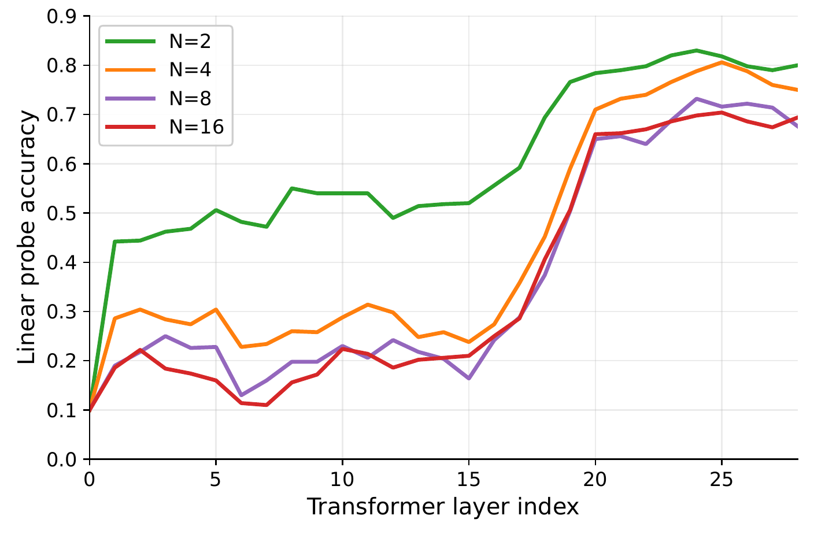
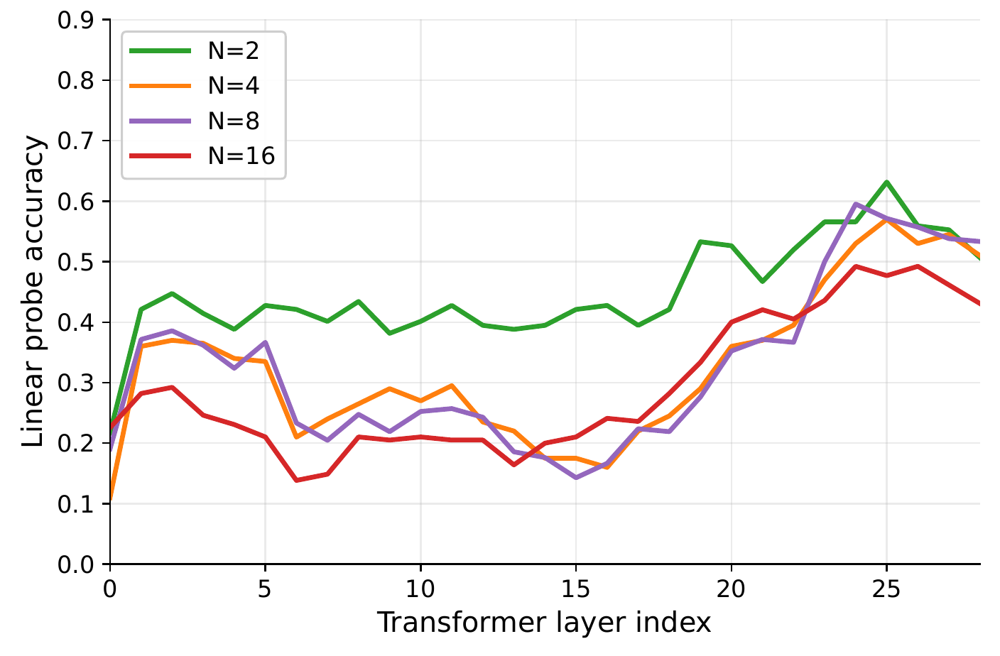

1
Not erasedThe sound stays decodable in deep layers, even when the model answers wrong.
A linear probe on the final query token recovers the 10-way sound class from layer 20 onward. At N = 16 it reaches about 70% by layer 25 (about 80% at N = 2). Restricted to trials the model failed, layer-25 probe accuracy is still about 48%, far above the 10% chance level.
Context length also moves where the sound is integrated: at N = 2 the probe reaches about 0.50 by layer 5, while at N = 8 and 16 mid-layer accuracy stays near 0.20 up to layer 15 and jumps in layers 16–21.



